Deploy Dynatrace#
Dynatrace provides integrated log management and analytics for your Kubernetes environments by either running the OneAgent Log Module or integrating with log collectors such as Fluent Bit, OpenTelemetry Collector, Logstash, or Fluentd.
Dynatrace provides a flexible approach to Kubernetes observability where you can pick and choose the level of observability you need for your Kubernetes clusters. The Dynatrace Operator manages all the components needed to get the data into Dynatrace for you. This also applies to collecting logs from Kubernetes containers. Depending on the selected observability option, the Dynatrace Operator configures and manages the Log Module to work in conjunction with or without a OneAgent on the node.
Kubernetes Platform Monitoring + Application Observability#
Kubernetes platform monitoring sets the foundation for understanding and troubleshooting your Kubernetes clusters. This setup does not include OneAgent or application-level monitoring by default, but it can be combined with other monitoring and injection approaches.
Kubernetes Platform Monitoring: Capabilities
- Provides insights into the health and utilization of your Kubernetes clusters, including object relationships (topology)
- Uses the Kubernetes API and cAdvisor to get node- and container-level metrics and Kubernetes events
- Enables out-of-the-box alerting and anomaly detection for workloads, Pods, nodes, and clusters
Application observability focuses on monitoring application-level metrics by injecting code modules into application Pods. This mode offers multiple injection strategies (automatic, runtime, and build-time) to collect application-specific metrics. For infrastructure-level insights, combine it with Kubernetes platform monitoring.
Application Observability: Capabilities
- Dynatrace injects code modules into Pods using the Kubernetes admission controller.
- Get granular control over the instrumented Pods using namespaces and annotations.
- Route Pod metrics to different Dynatrace environments within the same Kubernetes cluster.
- Enable data enrichment for Kubernetes environments.
Start Monitoring Kubernetes#
In your Dynatrace tenant, launch the Kubernetes app. From the Overview tab, click on Add cluster.
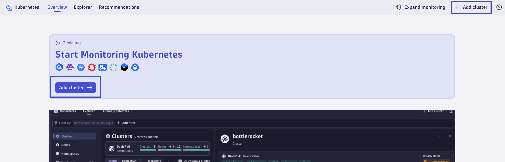
1. Select distribution
Choose Other distributions as your distribution, as we will be deploying Dynatrace on a generic Kind Kubernetes cluster.
2. Select observability options
Choose Kubernetes platform monitoring + Application observability as your observability option. This will define your Dynakube spec/configuration.
Toggle the Log Management and Analytics flag/setting to Enabled. Expand the option and select Fully managed with Dynatrace Log Module.
Check the box for Restrict Log monitoring to certain resources. In the Namespaces field, type astroshop. This will filter log ingestion on logs related to the astroshop Kubernetes namespace.
Toggle the Extensions flag/setting to Disabled. We will not be using this feature in this lab.
Toggle the Telemetry endpoints for data ingest flag/setting to Disabled. We will not be using this feature in this lab.
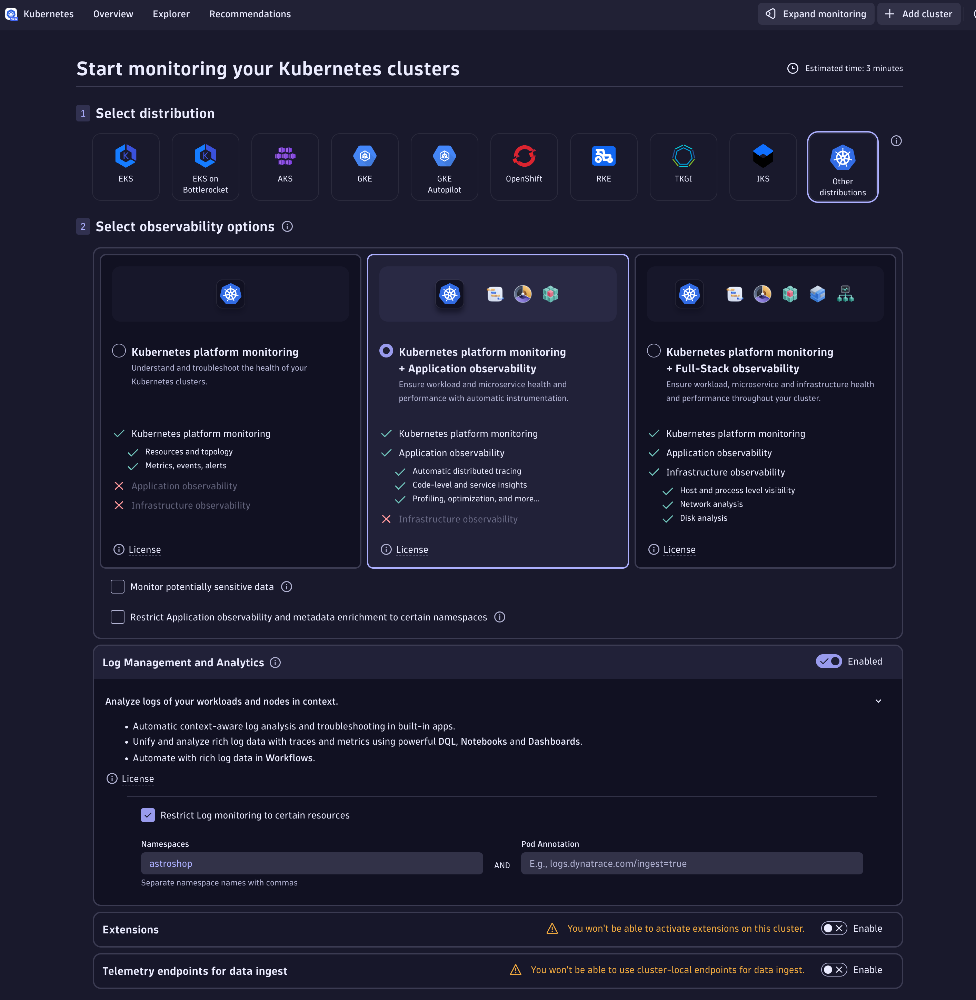
3. Configure cluster
Give your Kubernetes cluster a name, enter enablement-log-ingest-101.
4. Install Dynatrace Operator
Generate a Dynatrace Operator Token. Copy and save the value somewhere, in case you need it. The value will automatically be added to the dynakube.yaml file.
Generate a Data Ingest Token. Copy and save the value somewhere, in case you need it. The value will automatically be added to the dynakube.yaml file.
Download the dynakube.yaml file.
Copy the helm install dynatrace-operator command to your clipboard. Use the command from your Dynatrace tenant, but it should look similar to this:
helm install dynatrace-operator oci://public.ecr.aws/dynatrace/dynatrace-operator \
--create-namespace \
--namespace dynatrace \
--atomic
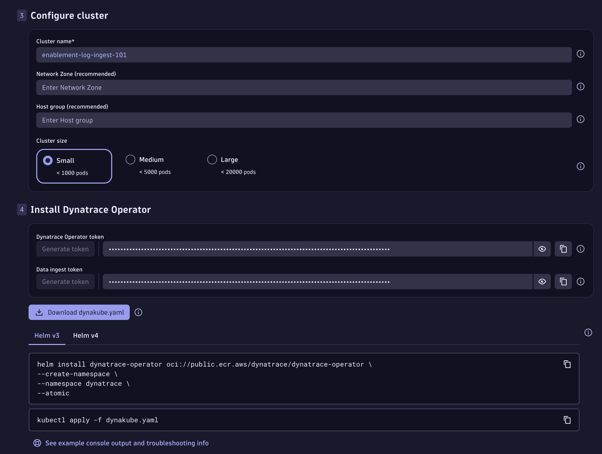
Deploy Dynatrace Operator#
Open the Terminal tab. Paste the helm install dynatrace-operator command and execute it.
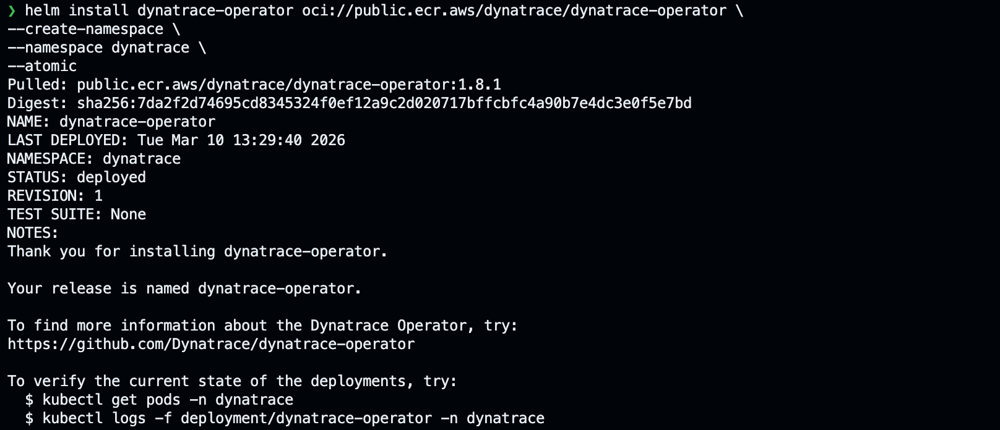
Validate the new Dynatrace pods are running:
Deploy Dynakube#
Open the Terminal tab. Create a dynakube.yaml file (e.g. nano dynakube.yaml) and paste in the DynaKube manifest you generated in your tenant, then save it.
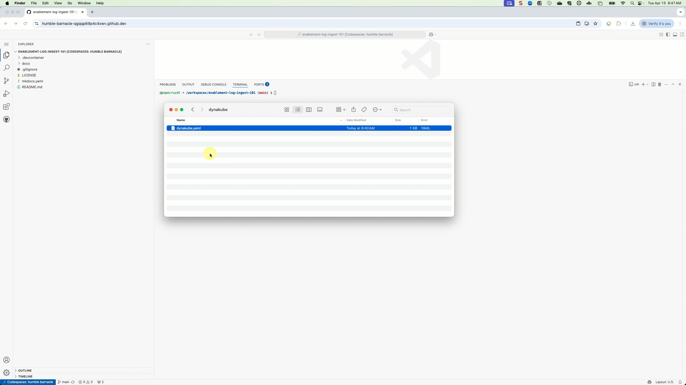
ActiveGate Container Resources
Please change the ActiveGate's resources for better performance in this lab environment. Dynatrace default deployment of the Dynakaube brings a separation of concerns architecture for production environments where it separates the monitoring traffic from kubernetes monitoring and agent traffic from application observability.
kind: DynaKube
metadata:
name: enablement-log-ingest-101
#...
activeGate:
capabilities:
- kubernetes-monitoring
resources:
requests:
cpu: 100m
memory: 512Mi
limits:
cpu: 500m
memory: 768Mi
replicas: 1
#...
---
kind: DynaKube
metadata:
name: enablement-log-ingest-101-agents
#...
oneAgent:
applicationMonitoring: {}
activeGate:
capabilities:
- routing
- debugging
resources:
requests:
cpu: 100m
memory: 512Mi
limits:
cpu: 500m
memory: 768Mi
replicas: 1
#...
Deploy the Dynakube using kubectl.
Wait 3-5 minutes and validate that the Dynatrace pods are running.
| NAME | READY | STATUS | RESTARTS | AGE |
|---|---|---|---|---|
| dynatrace-oneagent-csi-driver-7b9kx | 4/4 | Running | 0 | 3m5s |
| dynatrace-operator-747d795b5c-hrmtl | 1/1 | Running | 0 | 3m5s |
| dynatrace-webhook-5b697d4b9d-6v95s | 1/1 | Running | 0 | 3m5s |
| dynatrace-webhook-5b697d4b9d-nvslc | 1/1 | Running | 0 | 3m5s |
| enablement-log-ingest-101-activegate-0 | 1/1 | Running | 0 | 90s |
| enablement-log-ingest-101-agents-activegate-0 | 1/1 | Running | 0 | 90s |
| enablement-log-ingest-101-logmonitoring-dxrsh | 1/1 | Running | 0 | 89s |
Dynakubes Kubernetes Monitoring and Application Observability + Log Management#
By default Dynatrace splits the ActiveGate responsibilities into two groups is recommended: One group handling everything related to Kubernetes platform monitoring, including KSPM, and the other managing Agent traffic routing, telemetry ingest, and extensions. This separation provides several advantages, to learn more about the advantages please read here
Enabling Log Management and Analytics with the option Fully managed with Dynatrace Log Module will add the Log Module to the Dynakube spec.
---
apiVersion: dynatrace.com/v1beta6
kind: DynaKube
metadata:
name: enablement-log-ingest-101
namespace: dynatrace
labels:
dynatrace.com/created-by: "dynatrace.kubernetes"
# Link to api reference for further information: https://docs.dynatrace.com/docs/ingest-from/setup-on-k8s/reference/dynakube-parameters
spec:
apiUrl: https://<tenant>/api
tokens: enablement-log-ingest-101
activeGate:
capabilities:
- kubernetes-monitoring
resources:
requests:
cpu: 100m
memory: 512Mi
limits:
cpu: 500m
memory: 768Mi
replicas: 1
templates:
logMonitoring:
imageRef:
repository: public.ecr.aws/dynatrace/dynatrace-logmodule
tag: 1.331.49.20260227-104933
logMonitoring:
ingestRuleMatchers:
- attribute: k8s.namespace.name
values:
- astroshop
---
apiVersion: dynatrace.com/v1beta6
kind: DynaKube
metadata:
name: enablement-log-ingest-101-agents
namespace: dynatrace
labels:
dynatrace.com/created-by: "dynatrace.kubernetes"
# Link to api reference for further information: https://docs.dynatrace.com/docs/ingest-from/setup-on-k8s/reference/dynakube-parameters
spec:
apiUrl: https:/<tenant>/api
tokens: enablement-log-ingest-101
metadataEnrichment:
enabled: true
oneAgent:
applicationMonitoring: {}
activeGate:
capabilities:
- routing
- debugging
resources:
requests:
cpu: 100m
memory: 512Mi
limits:
cpu: 500m
memory: 768Mi
replicas: 1
The Log Module runs as a container in a standalone pod (as part of a daemonset) on each node. The spec.templates.imageRef defines the container image and tag to be used.
ImagePullBackOff Error
In case you encounter an ImagePullBackOff error (using sprint or dev tenants), check public.ecr.aws to make sure the container image with that tag exists. If not, change the value to use an existing one.
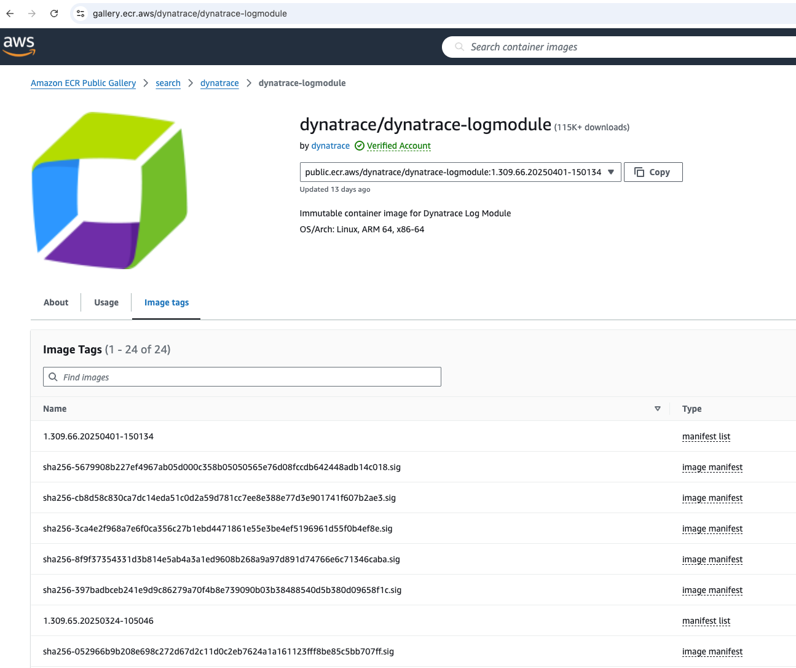
Enabling the option Restrict Log monitoring to certain resources option will add spec.logMonitoring.ingestRuleMatchers to the Dynakube definition.
Log Ingest Rule Configuration
Log ingest for the Log Module is controlled by the Dynatrace tenant, not the local Dynakube configuration! This configuration is a quality of life feature that is to be used during the initial deployment of Dynatrace on Kubernetes.
By enabling the Log Module in your dynakube.yaml definition, this will enable the Dynakube to add a Log Ingest rule scoped at the Cluster-level within the Dynatrace tenant.
As of Dynatrace Operator version 1.4.2 and Dynatrace version 1.311, the Log Ingest rule is added upon deployment and creation of the Kubernetes Cluster setting, but any further changes within the Dynakube's configuration will not update the setting. Manage Log Ingest rules within the Dynatrace tenant. If you seek to automate this process at the Kubernetes Cluster-level, consider deploying Dynatrace Configuration As Code to manage the setting.
Configure Log Ingest#
In your Dynatrace tenant, return to the Kubernetes app. Click on the Explorer tab. In your list of Clusters, click on enablement-log-ingest-101.
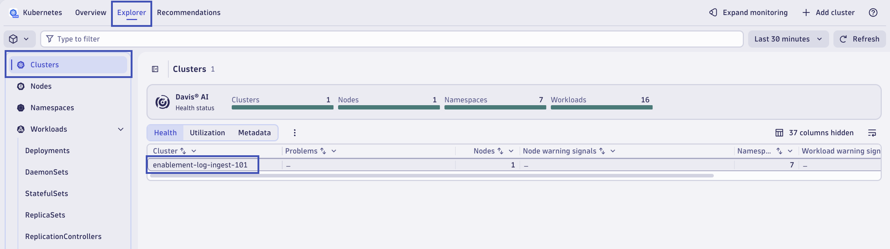
From the Cluster overview pop-out, in the top right corner, click on the ... ellipsis icon, and then click on the drilldown for Log ingest rules.
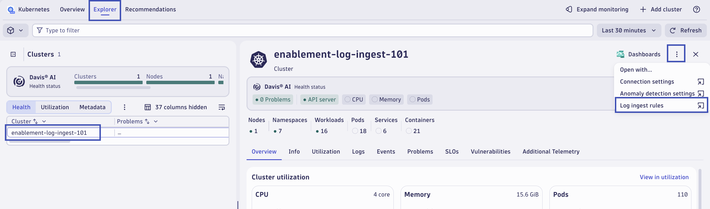
This will open the Kubernetes app and the connection settings for the Kubernetes Cluster. In the Log Monitoring settings, the Log Ingest rules are shown. You'll find the rule that was created by the Dynakube that matches the configuration in the dynakube.yaml spec. It should be configured to only ingest logs from the astroshop namespace.
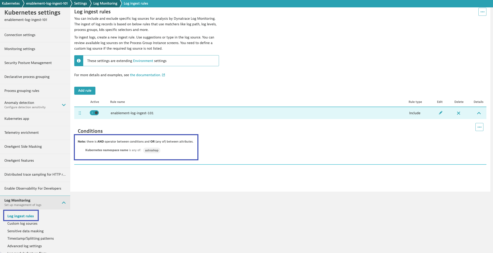
Refresh Application Pods#
Now that Dynatrace is deployed, let's refresh/recycle the application pods for astroshop to inject the OneAgent code modules.
Validate Log Ingest#
In your Dynatrace tenant, return to the Kubernetes app. From the Cluster overview tab, click on Namespaces to open the list of Namespaces on the Cluster.
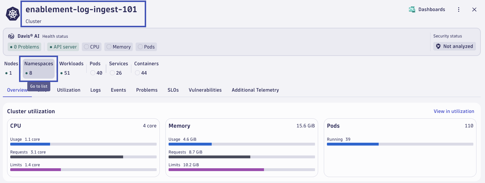
From the list of Namespaces, click on astroshop. From the Namespace pop-out, click the Logs tab. Verify in the chart that logs are being ingested for the astroshop namespace. Click on Run query on the Show logs in current context option.
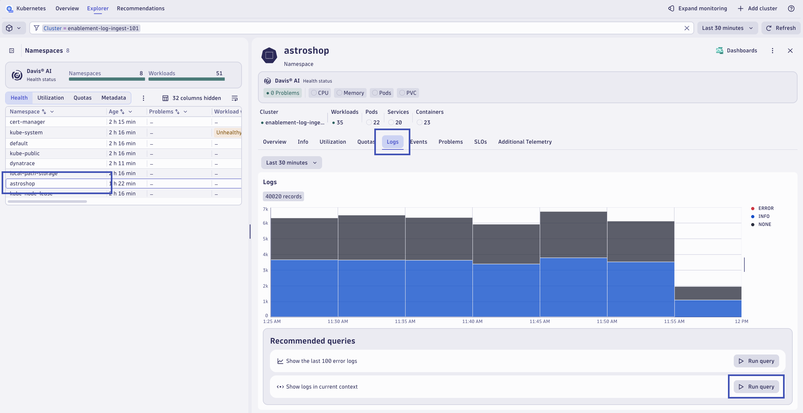
Validate log data after running the query.
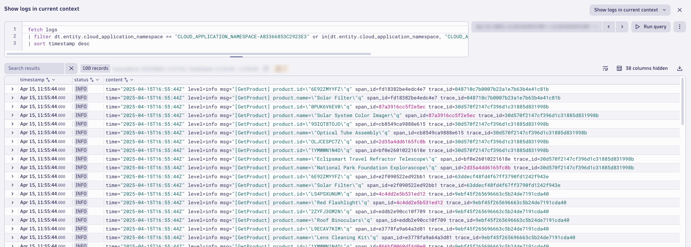
You can also run this DQL directly in the Logs or Notebooks app to confirm ingest:
Time filter
The filter timestamp > now() - 10m clause shows only logs from your session in the last 10 minutes, avoiding false positives from earlier runs.
Continue#
In the next section, we'll configure Log Monitoring in Dynatrace.